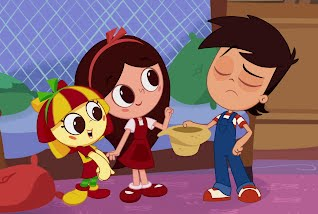

Histórias Infantis


36 curtidas
42 views
Emília
Essa história foi escrita por Monteiro Lobato, em 1977
Emília é uma boneca de pano feita por tia Nastácia, os olhos de linha preta. Narizinho gosta muito dela, tanto que não desgruda da boneca. Almoça e janta com ela ao seu lado, e ao se deitar tem o cuidado de acomodá-la em uma rede perto dos pés da cadeira. Emília era muda, mas doutor Caramujo deu a ela uma pílula falante e, ao engolir a pílula Emília desandou a falar, falar, falar muito. A primeira coisa que disse foi: ‘Estou com um horrível gosto de sapo na boca!’ Mas Emília falava tanto, tanto, tanto, "que Narizinho meio atordoada disse ao doutor que era melhor fazê-la vomitar aquela pílula e engolir outra mais fraca.